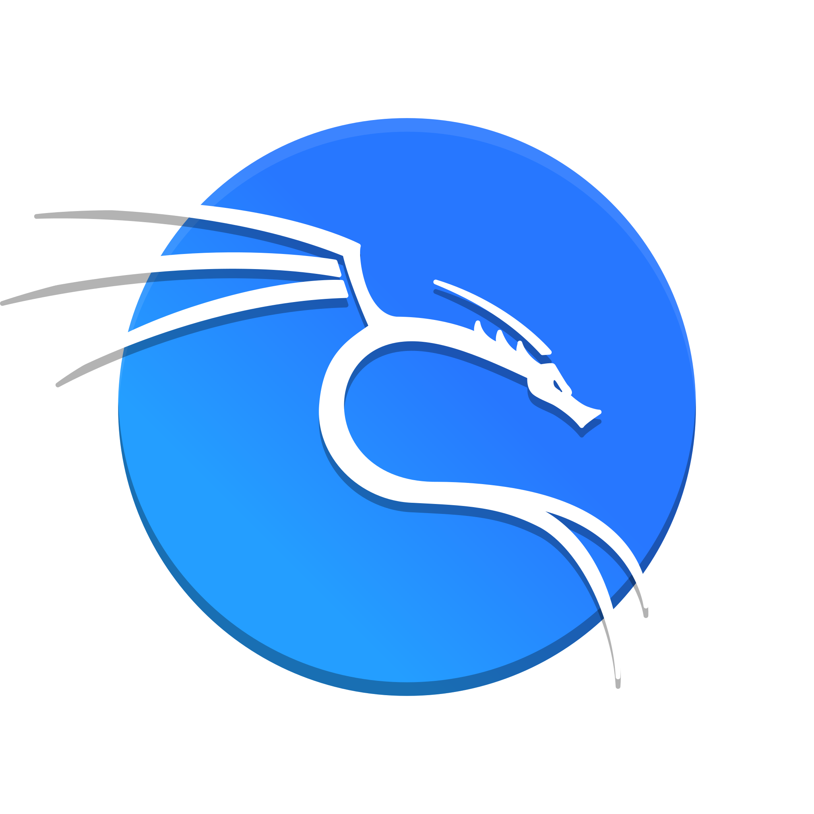

Hello, I'm Carina Yoehadi
Cyber Enthusiast
A cyber security student with a high level of curiosity, and enthusiasm for continuous learning. Skilled in teamwork, communication, an tend to be thorough in carrying out assignments or projects. Experienced in hands-on college projects related to penetration testing, security analysis, and threat modeling. Passionate about developing new skills and growing within a professional working environment. I am highly motivated in seeking for an opportunity to contribute as a Cyber Security Intern and apply knowledge to real-world security challenges.
Education
School of Computer Science - Cyber Security (2023-Now)
Bina Nusantara University
Certificates
Tech stack that I familiar with:
Here are the tech stack that I have used:

C

HTML

Javascript

CSS

Github

Vscode

Figma

Kali Linux